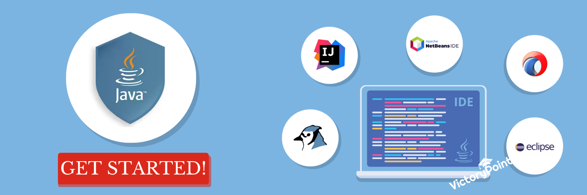

Setting up the development environment (IDE, JDK)
Are you ready to embark on an exciting journey into the world of programming? Then let's talk about setting up your development environment!
Before you can start writing your first line of code, you need to set up your development environment. The development environment is where you will write, test, and debug your programs. This includes choosing the right Integrated Development Environment (IDE) and installing the Java Development Kit (JDK). In this blog, we'll dive into the importance of setting up the development environment and how to do it right.
The Integrated Development Environment (IDE)
The IDE is a software application that provides a comprehensive environment for developing, testing, and debugging code. IDEs offer a wide range of features that make programming easier, such as code completion, syntax highlighting, debugging tools, and more. Choosing the right IDE is crucial to your productivity as a programmer.
There are several IDEs available for Java programming, each with its own set of features and advantages. Whether you choose Eclipse, NetBeans, or IntelliJ IDEA, make sure you select an IDE that suits your style and meets your requirements. It's like choosing a wand in the world of Harry Potter – it's important to find the right one that feels comfortable in your hand and complements your strengths.
The Java Development Kit (JDK)
The Java Development Kit (JDK) is the backbone of your programs. The JDK is a software development kit used to develop Java applications. It includes the Java Runtime Environment (JRE), which is necessary to run Java programs, and the Java Development Tools (JDT), which includes the compiler and other tools required to build Java applications.
Setting up the Development Environment
Setting up your development environment can be a daunting task, but it's essential to get it right. Here's how you can set up your development environment for Java programming:
- Step 1: Install the JDK
Installing the JDK is a crucial step in setting up your development environment. But don't worry; it's a straightforward process. Just go to the Oracle website and download the latest version of the JDK for your operating system. Then follow the installation instructions, and you're good to go.
- Step 2: Install an IDE
Choose an IDE that works best for you and install it on your computer. Most IDEs have an easy installation process, and you can follow the instructions to get it installed.
- Step 3: Configure the IDE
Once you've installed the IDE, you need to configure it to use the JDK you installed. In most IDEs, you can find the option to set the JDK under the "Preferences" or "Options" menu. Make sure you set the correct path to the JDK you installed.
- Step 4: Create a new project
Now that your IDE is configured, you can create a new project and start writing your Java code. Your IDE will create the necessary files and directories for your project and set up a default project structure. Congratulations, you're now ready to dive into the exciting world of programming!
Conclusion: The Adventure Awaits
In conclusion, setting up your development environment doesn't have to be a daunting task. It's a crucial step towards beginning your journey as a programmer. Select an IDE that suits your style, install the latest version of the JDK, and configure your IDE to use it. Once you've completed these steps, you'll be ready to embark on a thrilling adventure in the world of programming. So, don't hesitate to take the first step and happy coding!